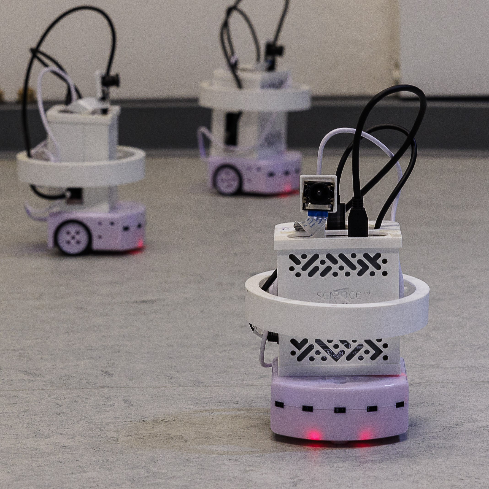
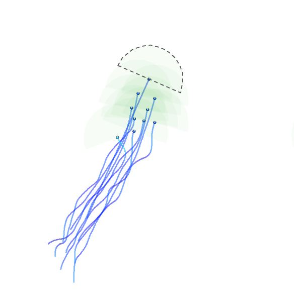

Visual Swarm (VSWRM)
A purely vision-based decentralized controller for swarming robots
Collective movement is a widely observed phenomenon in nature. Be it schools of fish,
flocks of birds or bands of insects, animals can implement well-coordinated collective movement
relying only their perception, i.e. the locally available information surrounding them. Current flocking models
often rely on, instead of local, global information such as the exact position of conspecifics.
How does collective motion arise only from local perception? Is it possible to create a purely
vision-based controller for robots that implements similarly coordinated movement?
 To study this question we implemented a novel vision-based flocking model introduced by Bastien and Romanczuk in both simulated agents and in 10 small terrestrial robots. We studied the following:
- How does a limited FOV influence the original vision-based flocking model?
- How does the model perform in a constrained environment (walls)?
- How does the model perform on real robots with a fully decentralized design?

We found in simulations that limiting the visual perception of individuals fundamentally changes
the resulting movement patterns, and less visual information sometimes even favors
coordinated movement. Combining our findings with limited spaces, on the other hand,
always made it more challenging for groups to realize coordinated migrating movement
without collisions as in these cases agents are continously perturbed by limiting walls.
We also found that the smaller the agents' FOV is the less cohesive the group remains
as agents can break away from the group if no other agent is visible.
 Using our results from simulated agents we could synthesize a vision-based controller
for small robots. We found that the controller is able to realize coordinated movement
without any centralized control. The robots are able to move together only using their camera stream as input
computing all necessary information on board including detecting each other using CNN-based
object detection. Decentralized control might provide stark benefits over centralized control
in the future. Once robots use only local information they become robuts towards global information jamming (e.g. GPS jamming) or outages.
Furthermore, agents do not communicate information wo each other directly, that allows coordinated movement of different types
of robots without a compatible communication protocol.
Using our results from simulated agents we could synthesize a vision-based controller
for small robots. We found that the controller is able to realize coordinated movement
without any centralized control. The robots are able to move together only using their camera stream as input
computing all necessary information on board including detecting each other using CNN-based
object detection. Decentralized control might provide stark benefits over centralized control
in the future. Once robots use only local information they become robuts towards global information jamming (e.g. GPS jamming) or outages.
Furthermore, agents do not communicate information wo each other directly, that allows coordinated movement of different types
of robots without a compatible communication protocol.
Manuscript comes soon...
- GitHub Find the Code on GitHub